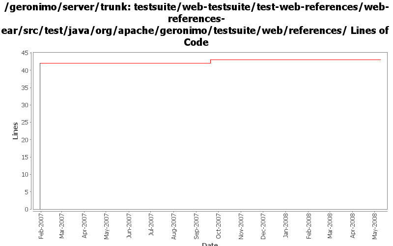

[root]/testsuite/web-testsuite/test-web-references/web-references-ear/src/test/java/org/apache/geronimo/testsuite/web/references

| Author | Changes | Lines of Code | Lines per Change |
|---|---|---|---|
| Totals | 4 (100.0%) | 47 (100.0%) | 11.7 |
| prasad | 1 (25.0%) | 42 (89.4%) | 42.0 |
| gawor | 1 (25.0%) | 3 (6.4%) | 3.0 |
| jdillon | 2 (50.0%) | 2 (4.3%) | 1.0 |
Use waitForPageLoad()
1 lines of code changed in 1 file:
add selenium plug-in so that mvn -P child actaully works, and fix some tests
3 lines of code changed in 1 file:
Std props
1 lines of code changed in 1 file:
* deleted unused itests
* configured war-plugin at top to filter webapp resources
* configured ear-plugin at top to use filtered resourcesDir
* added test-jetty, test-security, test-tomcat, test-web-references (Thanx Krish)
* beautified some poms
* changed pkg names of java files in test-jsps and test-servlets
42 lines of code changed in 1 file: